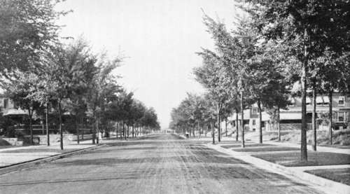

Chapter XXXIV. Trees In Towns And Villages
Description
This section is from the book "Landscape Gardening", by Andrew Jackson Downing. Also available from Amazon: Landscape Gardening.
Chapter XXXIV. Trees In Towns And Villages
THE man who loves not trees, to look at them, to lie under them, to climb up them (once more a schoolboy), would make no bones of murdering Mrs. Jeffs. In what one imaginable attribute that it ought to possess is a tree deficient? Light, shade, shelter, coolness, freshness, music, all the colors of the rainbow, dew and dreams dropping through their soft twilight, at eve and morn, — dropping direct, soft, sweet, soothing, restorative from heaven. Without trees, how, in the name of wonder, could we have had houses, ships, bridges, easy chairs, or coffins, or almost any single one of the necessaries, comforts, or conveniences of life? Without trees, one might have been born with a silver spoon in his mouth, but not another with a wooden ladle".
Every man, who has in his nature a spark of sympathy with the good and beautiful, must involuntarily respond to this rhapsody of Christopher North's in behalf of trees — the noblest and proudest drapery that sets off the figure of our fair planet. Every man's better sentiments would involuntarily lead him to cherish, respect, and admire trees. And no one who has sense enough rightly to understand the wonderful system of life, order, and harmony, that is involved in one of our grand and majestic forest trees, could ever destroy it unnecessarily without a painful feeling, we should say, akin at least to murder in the fourth degree.
Yet it must be confessed that it is surprising when, from the force of circumstances what the phrenologists call the principle of destructiveness gets excited, how sadly men's better feelings are warped and smothered. Thus old soldiers sweep away ranks of men with as little compunction as the mower swings his harmless scythe in a meadow; and settlers, pioneers, and squatters, girdle and make a clearing in a centennial forest, perhaps one of the grandest that ever God planted, with no more remorse than we have in brushing away dusty cobwebs. We are not now about to declaim against war, as a member of the peace society, or against planting colonies and extending the human family, as would a disciple of Dr. Malthus. These are probably both wise means of progress in the hands of the Great Worker.
* Original date of March, 1847. 349.
Fig. 44. Young American Elms as Street Trees.
But it is properly our business to bring men back to their better feelings when the fever of destruction is over. If our ancestors found it wise and necessary to cut down vast forests, it is all the more needful that their descendants should plant trees. We shall do our part, therefore, towards awakening again that natural love of trees which this long warfare against them — this continual laying the axe at their roots — so common in a new country, has in so many places well nigh extinguished. We ought not to cease till every man feels it to be one of his moral duties to become a planter of trees; until every one feels, indeed, that, if it is the most patriotic thing that can be done to make the earth yield two blades of grass instead of one, it is far more so to cause trees to grow where no foliage has waved and fluttered before — trees, which are not only full of usefulness and beauty always, but to which old Time himself grants longer leases than he does to ourselves; so that he who plants them wisely, is more certain of receiving the thanks of posterity than the most persuasive orator or the most prolific writer of his day and generation.
The especial theme of our lamentation touching trees at the present moment is the general neglect and inattention to their many charms, in country towns and villages. We say general, for our mind dwells with unfeigned delight upon exceptions — many beautiful towns and villages in New England, where the verdure of the loveliest elms waves like grand lines of giant and graceful plumes above the house tops, giving an air of rural beauty that speaks louder for the good habits of the inhabitants than the pleasant sound of a hundred church bells. We remember Northampton, Springfield, New Haven, Stockbridge, and others, whose long and pleasant avenues are refreshing and beautiful to look upon. We do not forget that large and sylvan park, with undulating surface, the Boston Common, or that really admirable city arboretum of rare trees, Washington Square of Philadelphia. Their groves are as beloved and sacred in our eyes as those of the Deo-dar are to the devout Brahmins.
But these are, we are sorry to be obliged to say, only the exceptions to the average condition of our country towns. As an offset to them, how many towns, how many villages, could we name, where rude and uncouth streets bask in the summer heat, and revel in the noontide glare, with scarcely a leaf to shelter or break the painful monotony! Towns and villages, where there is no lack of trade, no apparent want of means, where houses are yearly built, and children weekly born, but where you might imagine, from their barrenness, that the soil had been cursed and had refused to support the life of a single tree.
What must be done in such cases? There must be at least one right-feeling man in every such Sodom. Let him set vigorously at work, and if he cannot induce his neighbors to join him, he must not be disheartened — let him plant and cherish carefully a few trees, if only half a dozen. They must be such as will grow vigorously, and like the native elm, soon make themselves felt and seen wherever they may be placed. In a very few years they will preach more eloquent orations than gray goose quills can write. Their luxuriant leafy arms, swaying and waving to and fro, will make more convincing gestures than any member of congress or stump speaker; and if there is any love of nature dormant in the dusty hearts of the villagers, we prophesy that in a very short time there will be such a general yearning after green trees that the whole place will become a bower of freshness and verdure.
Continue to: